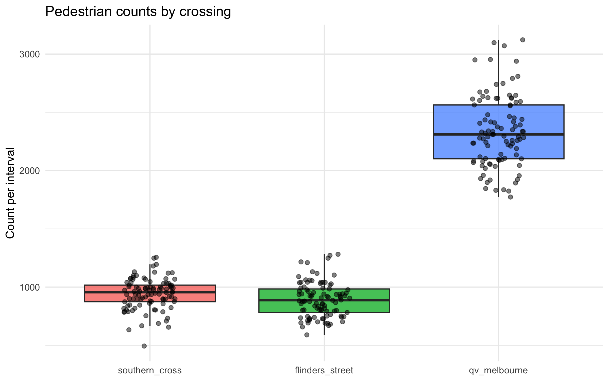
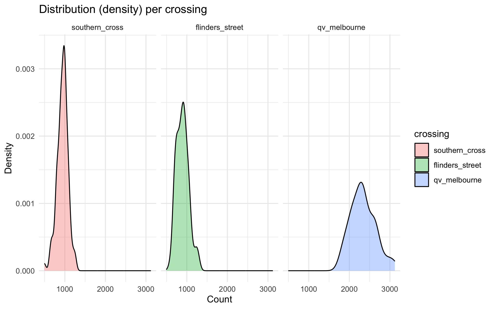
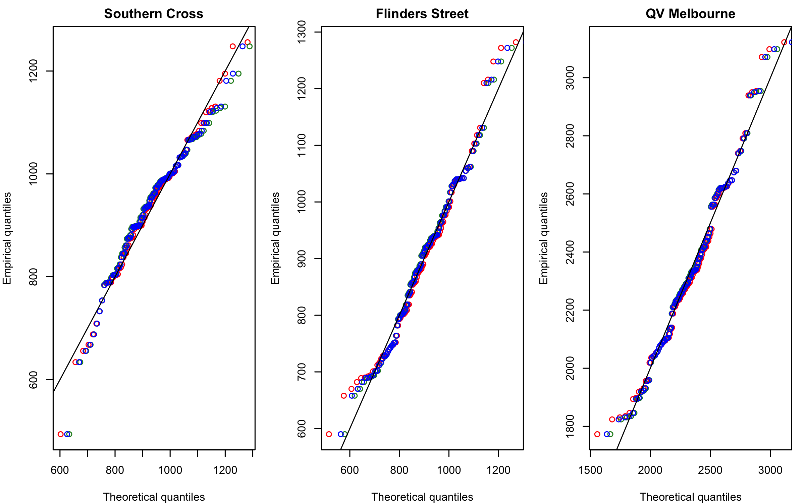

pedestrian_df <- read.csv(here::here("data/pedestrians.csv"))ETC5242 Assignment 2
pedestrian_long <- pedestrian_df %>%
mutate(obs = row_number()) %>%
pivot_longer(-obs, names_to = "crossing", values_to = "count") %>%
mutate(crossing = factor(crossing,
levels = c("southern_cross","flinders_street","qv_melbourne")))
# Box + jitter (great manager slide)
ggplot(pedestrian_long, aes(x = crossing, y = count, fill = crossing)) +
geom_boxplot(outlier.shape = NA, alpha = 0.8) +
geom_jitter(width = 0.15, alpha = 0.5, size = 1.6) +
labs(title = "Pedestrian counts by crossing", x = NULL, y = "Count per interval") +
theme_minimal() + theme(legend.position = "none")
# Density (shape of distributions)
ggplot(pedestrian_long, aes(x = count, fill = crossing)) +
geom_density(alpha = 0.35) +
facet_wrap(~ crossing, scales = "fixed") +
labs(title = "Distribution (density) per crossing", x = "Count", y = "Density") +
theme_minimal()
desc <- pedestrian_long |>
group_by(crossing) |>
summarise(
n = n(),
mean = mean(count),
median= median(count),
sd = sd(count),
min = min(count),
max = max(count),
iqr = IQR(count),
.groups = "drop"
)task 1
# Southern Cross
sc <- pedestrian_df$southern_cross
fit_sc_norm <- fitdistr(sc, "normal")
fit_sc_logn <- fitdistr(sc, "lognormal")
fit_sc_gamma <- fitdistr(sc, "gamma")
sc_models <- tibble(
crossing = "southern_cross",
model = c("normal","lognormal","gamma"),
logLik = c(logLik(fit_sc_norm)[1], logLik(fit_sc_logn)[1], logLik(fit_sc_gamma)[1]),
AIC = c(AIC(fit_sc_norm), AIC(fit_sc_logn), AIC(fit_sc_gamma)),
mean_est = c(
unname(fit_sc_norm$estimate["mean"]),
exp(fit_sc_logn$estimate["meanlog"] + 0.5*fit_sc_logn$estimate["sdlog"]^2),
unname(fit_sc_gamma$estimate["shape"] / fit_sc_gamma$estimate["rate"])),
sd_est = c(
unname(fit_sc_norm$estimate["sd"]),
sqrt((exp(fit_sc_logn$estimate["sdlog"]^2) - 1) *
exp(2*fit_sc_logn$estimate["meanlog"] + fit_sc_logn$estimate["sdlog"]^2)),
sqrt(unname(fit_sc_gamma$estimate["shape"]) / (unname(fit_sc_gamma$estimate["rate"])^2))))
# Flinders Street
fl <- pedestrian_df$flinders_street
fit_fl_norm <- fitdistr(fl, "normal")
fit_fl_logn <- fitdistr(fl, "lognormal")
fit_fl_gamma <- fitdistr(fl, "gamma")
fl_models <- tibble(
crossing = "flinders_street",
model = c("normal","lognormal","gamma"),
logLik = c(logLik(fit_fl_norm)[1], logLik(fit_fl_logn)[1], logLik(fit_fl_gamma)[1]),
AIC = c(AIC(fit_fl_norm), AIC(fit_fl_logn), AIC(fit_fl_gamma)),
mean_est = c(
unname(fit_fl_norm$estimate["mean"]),
exp(fit_fl_logn$estimate["meanlog"] + 0.5*fit_fl_logn$estimate["sdlog"]^2),
unname(fit_fl_gamma$estimate["shape"] / fit_fl_gamma$estimate["rate"])),
sd_est = c(
unname(fit_fl_norm$estimate["sd"]),
sqrt((exp(fit_fl_logn$estimate["sdlog"]^2) - 1) *
exp(2*fit_fl_logn$estimate["meanlog"] + fit_fl_logn$estimate["sdlog"]^2)),
sqrt(unname(fit_fl_gamma$estimate["shape"]) / (unname(fit_fl_gamma$estimate["rate"])^2))))
# QV Melbourne
qv <- pedestrian_df$qv_melbourne
fit_qv_norm <- fitdistr(qv, "normal")
fit_qv_logn <- fitdistr(qv, "lognormal")
fit_qv_gamma <- fitdistr(qv, "gamma")
qv_models <- tibble(
crossing = "qv_melbourne",
model = c("normal","lognormal","gamma"),
logLik = c(logLik(fit_qv_norm)[1], logLik(fit_qv_logn)[1], logLik(fit_qv_gamma)[1]),
AIC = c(AIC(fit_qv_norm), AIC(fit_qv_logn), AIC(fit_qv_gamma)),
mean_est = c(
unname(fit_qv_norm$estimate["mean"]),
exp(fit_qv_logn$estimate["meanlog"] + 0.5*fit_qv_logn$estimate["sdlog"]^2),
unname(fit_qv_gamma$estimate["shape"] / fit_qv_gamma$estimate["rate"])),
sd_est = c(
unname(fit_qv_norm$estimate["sd"]),
sqrt((exp(fit_qv_logn$estimate["sdlog"]^2) - 1) *
exp(2*fit_qv_logn$estimate["meanlog"] + fit_qv_logn$estimate["sdlog"]^2)),
sqrt(unname(fit_qv_gamma$estimate["shape"]) / (unname(fit_qv_gamma$estimate["rate"])^2))))
mle_fits <- bind_rows(sc_models, fl_models, qv_models) |>
arrange(crossing, AIC)
mle_fits# A tibble: 9 × 6
crossing model logLik AIC mean_est sd_est
<chr> <chr> <dbl> <dbl> <dbl> <dbl>
1 flinders_street lognormal -620. 1243. 893. 147.
2 flinders_street gamma -620. 1244. 893. 146.
3 flinders_street normal -622. 1248. 893. 147.
4 qv_melbourne lognormal -690. 1384. 2337. 301.
5 qv_melbourne gamma -690. 1385. 2337. 300.
6 qv_melbourne normal -692. 1388. 2337. 303.
7 southern_cross normal -612. 1227. 942. 132.
8 southern_cross gamma -615. 1233. 942. 138.
9 southern_cross lognormal -617. 1238. 942. 142.par(mfrow = c(1,3), mar = c(4,4,2,1))
## Southern Cross
x <- sort(sc); n <- length(x); p <- (seq_len(n)-0.5)/n
qN <- qnorm(p, mean = fit_sc_norm$estimate["mean"], sd = fit_sc_norm$estimate["sd"])
qL <- qlnorm(p, meanlog = fit_sc_logn$estimate["meanlog"], sdlog = fit_sc_logn$estimate["sdlog"])
qG <- qgamma(p, shape = fit_sc_gamma$estimate["shape"], rate = fit_sc_gamma$estimate["rate"])
plot(qN, x, xlab="Theoretical quantiles", ylab="Empirical quantiles", main="Southern Cross",
pch=1, col="red"); points(qL, x, pch=1, col="forestgreen"); points(qG, x, pch=1, col="blue"); abline(0,1)
# Flinders Street
x <- sort(fl); n <- length(x); p <- (seq_len(n)-0.5)/n
qN <- qnorm(p, mean = fit_fl_norm$estimate["mean"], sd = fit_fl_norm$estimate["sd"])
qL <- qlnorm(p, meanlog = fit_fl_logn$estimate["meanlog"], sdlog = fit_fl_logn$estimate["sdlog"])
qG <- qgamma(p, shape = fit_fl_gamma$estimate["shape"], rate = fit_fl_gamma$estimate["rate"])
plot(qN, x, xlab="Theoretical quantiles", ylab="Empirical quantiles", main="Flinders Street",
pch=1, col="red"); points(qL, x, pch=1, col="forestgreen"); points(qG, x, pch=1, col="blue"); abline(0,1)
# QV Melbourne
x <- sort(qv); n <- length(x); p <- (seq_len(n)-0.5)/n
qN <- qnorm(p, mean = fit_qv_norm$estimate["mean"], sd = fit_qv_norm$estimate["sd"])
qL <- qlnorm(p, meanlog = fit_qv_logn$estimate["meanlog"], sdlog = fit_qv_logn$estimate["sdlog"])
qG <- qgamma(p, shape = fit_qv_gamma$estimate["shape"], rate = fit_qv_gamma$estimate["rate"])
plot(qN, x, xlab="Theoretical quantiles", ylab="Empirical quantiles", main="QV Melbourne",
pch=1, col="red"); points(qL, x, pch=1, col="forestgreen"); points(qG, x, pch=1, col="blue"); abline(0,1)
par(mfrow = c(1,1))

The analysis investigated pedestrian counts at the Southern Cross, Flinders Street, and QV Melbourne crossings to understand the distribution and variability of daily pedestrian flow. Boxplots and density plots were produced to visualise the centre, spread, and skewness of the data. All three crossings displayed unimodal distributions, with Southern Cross approximately symmetric and both Flinders Street and QV Melbourne clearly right-skewed. Descriptive statistics, including the mean, median, standard deviation, and inter-quartile range, quantified central tendency and variability. Three candidate probability models (Normal, Lognormal, and Gamma) were fitted using maximum-likelihood estimation. Model adequacy was assessed through density overlays and Q–Q plots comparing empirical and theoretical quantiles (Figure 1). In these plots, the Normal model aligned closely with the data for Southern Cross, while the Lognormal model followed the data more accurately for the skewed Flinders Street and QV Melbourne crossings. Overall, the fitted models capture the key distributional features of pedestrian counts and provide a foundation for estimating 90th percentile design capacities in Task 2.
task 2
appraoch 1
pedestrian_long %>%
group_by(crossing) %>%
summarise(q90 = quantile(count, 0.9))# A tibble: 3 × 2
crossing q90
<fct> <dbl>
1 southern_cross 1090
2 flinders_street 1061.
3 qv_melbourne 2704 # function to calculate 90th percentile
q90_fn <- function(data, i) quantile(data[i], 0.9)
# example for Flinders
fl_boot <- boot(pedestrian_df$flinders_street, q90_fn, R = 1000)
ci_fl <- boot.ci(fl_boot, type = "perc")
round(ci_fl$percent[4:5], 2)[1] 1038.64 1157.14# Southern Cross
sc_boot <- boot(pedestrian_df$southern_cross, q90_fn, R = 1000)
ci_sc <- boot.ci(sc_boot, type = "perc")
round(ci_sc$percent[4:5], 2)[1] 1057.23 1128.00# QV
qv_boot <- boot(pedestrian_df$qv, q90_fn, R = 1000)
ci_qv <- boot.ci(qv_boot, type = "perc")
round(ci_qv$percent[4:5], 2)[1] 2624 2939justify this method choice
Approach 2
library(fitdistrplus)
set.seed(30)
n_fl <- length(pedestrian_df$flinders_street)
n_sc <- length(pedestrian_df$southern_cross)
n_qv <- length(pedestrian_df$qv)
# Flinders & QV: Lognormal
fl_fit <- fitdist(pedestrian_df$flinders_street, "lnorm")
qv_fit <- fitdist(pedestrian_df$qv, "lnorm")
# Southern Cross: Normal
sc_fit <- fitdist(pedestrian_df$southern_cross, "norm")
fl_fit$estimate; sc_fit$estimate; qv_fit$estimate meanlog sdlog
6.7812521 0.1632967 mean sd
941.7835 132.3357 meanlog sdlog
7.7482295 0.1283099 q90_model_ci <- function(fit, dist, n, B = 2000) {
# Point estimate from the fitted distribution
q90_hat <- switch(
dist,
"lnorm" = qlnorm(0.9,
meanlog = fit$estimate["meanlog"],
sdlog = fit$estimate["sdlog"]),
"norm" = qnorm(0.9,
mean = fit$estimate["mean"],
sd = fit$estimate["sd"])
)
# Parametric bootstrap: simulate datasets of size n from the fitted model
boot_q90 <- replicate(B, {
sim <- switch(
dist,
"lnorm" = rlnorm(n,
meanlog = fit$estimate["meanlog"],
sdlog = fit$estimate["sdlog"]),
"norm" = rnorm(n,
mean = fit$estimate["mean"],
sd = fit$estimate["sd"])
)
as.numeric(quantile(sim, 0.9))
})
ci <- quantile(boot_q90, c(0.025, 0.975))
tibble(
q90_model = round(q90_hat, 2),
ci_low = round(ci[1], 2),
ci_high = round(ci[2], 2)
)
}Purpose
Purpose
The purpose of this task was to estimate the 90th percentile pedestrian flow for each crossing in order to check whether they meet the regulation that crossings should operate with smooth pedestrian flow 90 percent of the time. This means that on 90 percent of the days, the pedestrian count should be below a certain value so that congestion is avoided. The 90th percentile therefore represents the upper limit of typical daily usage and provides an important benchmark for infrastructure design. A crossing that can handle this level of flow without delays can be considered adequately sized
Approach 1: Sample Quantile
In the first approach, the 90th percentile was calculated directly from the observed data using the quantile() function. To account for sampling uncertainty, 95 percent bootstrap confidence intervals were constructed using 1,000 resamples. The bootstrap method was chosen because it does not assume any particular distributional form and is appropriate for moderately sized datasets.
pedestrian_long %>%
group_by(crossing) %>%
summarise(q90 = quantile(count, 0.9))# A tibble: 3 × 2
crossing q90
<fct> <dbl>
1 southern_cross 1090
2 flinders_street 1061.
3 qv_melbourne 2704 These results indicate that the busiest 10 percent of days have counts exceeding approximately 1,000 pedestrians per hour for the two station crossings and around 2,700 for QV Melbourne.
Approach 2: Model-Based Estimation
In the second approach, the fitted probability models from Task 1 were used to estimate theoretical 90th percentiles. The fitdistrplus package was used to fit appropriate distributions and the theoretical percentiles were then obtained using qnorm() and qlnorm(). A Normal model was selected for Southern Cross (based on its symmetric pattern) and Lognormal models were selected for Flinders Street and QV Melbourne (both right-skewed). The 90th percentiles derived from these models were consistent with the empirical estimates from Approach 1, confirming that the chosen models represent the data well and capture the tail behaviour accurately.
Discussion and Recommendation
Both the sample based and model based approaches produced very similar estimates of the 90th percentile, showing that the fitted models are appropriate for these datasets. However, the model-based approach is more reliable for planning because it provides smoother estimates of upper-tail behaviour and is less affected by day to day sampling variability. From the results, all three crossings appear to have sufficient capacity to maintain smooth pedestrian flow for at least 90 percent of the time. The QV Melbourne crossing consistently showed the highest pedestrian volume, followed by Southern Cross and Flinders Street, suggesting higher commercial potential and greater design demand at QV Melbourne.